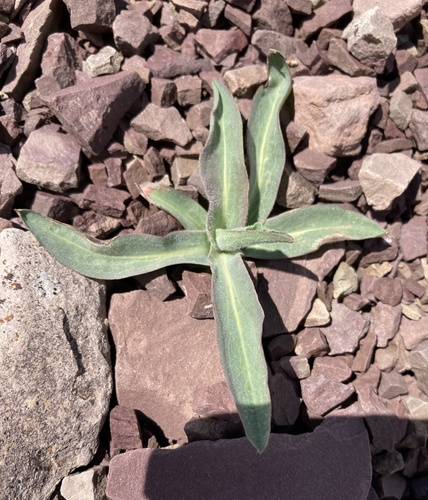

Cryptic Bumble Bee
Bombus cryptarum native bee
A short-tongued social bumble bee. Forages on Epilobium, Melilotus, Potentilla, Senecio and others.
20 documented plant relationships.
sips nectar at
 Douglas Goldman, some rights reserved (CC BY-SA), uploaded by Douglas Goldman") BearberryArctostaphylos uva-ursiBlue ClematisClematis occidentalis
BearberryArctostaphylos uva-ursiBlue ClematisClematis occidentalis Superior National Forest, some rights reserved (CC BY)") Cream-Coloured PeavineLathyrus ochroleucus
Cream-Coloured PeavineLathyrus ochroleucus Matt Lavin, some rights reserved (CC BY-SA)") Dotted BlazingstarLiatris punctata
Dotted BlazingstarLiatris punctata Douglas Goldman, some rights reserved (CC BY-SA), uploaded by Douglas Goldman") FireweedChamaenerion angustifolium
FireweedChamaenerion angustifolium Alan Prather, some rights reserved (CC BY), uploaded by Alan Prather") Giant HyssopAgastache foeniculum
Giant HyssopAgastache foeniculum Matt Lavin, some rights reserved (CC BY-SA)") Golden BeanThermopsis rhombifolia
Golden BeanThermopsis rhombifolia
Pale AgoserisAgoseris glauca Tom Norton, some rights reserved (CC BY), uploaded by Tom Norton") Pin CherryPrunus pensylvanica
Pin CherryPrunus pensylvanica Syd Cannings, some rights reserved (CC BY), uploaded by Syd Cannings") Prairie CrocusPulsatilla nuttalliana
Prairie CrocusPulsatilla nuttalliana Joshua Mayer, some rights reserved (CC BY-SA)") Prairie RoseRosa arkansana
Prairie RoseRosa arkansana Tom Norton, some rights reserved (CC BY), uploaded by Tom Norton") Prickly Wild RoseRosa acicularisPurple PeavineLathyrus venosusShrubby CinquefoilDasiphora fruticosa
Prickly Wild RoseRosa acicularisPurple PeavineLathyrus venosusShrubby CinquefoilDasiphora fruticosa gwt2102, some rights reserved (CC BY)") Spreading DogbaneApocynum androsaemifolium
Spreading DogbaneApocynum androsaemifolium Mary Krieger, some rights reserved (CC BY), uploaded by Mary Krieger") Western SnowberrySymphoricarpos occidentalis
Western SnowberrySymphoricarpos occidentalis tzeducation, some rights reserved (CC BY), uploaded by tzeducation") Wild BergamotMonarda fistulosa
Wild BergamotMonarda fistulosa Tom Hilton, some rights reserved (CC BY), uploaded by Tom Hilton") Wild Blue FlaxLinum lewisii
Wild Blue FlaxLinum lewisii Don Loarie, some rights reserved (CC BY), uploaded by Don Loarie") Woods' RoseRosa woodsii
Woods' RoseRosa woodsii Matt Berger, some rights reserved (CC BY), uploaded by Matt Berger") Yellow Monkey FlowerErythranthe guttata
Yellow Monkey FlowerErythranthe guttata